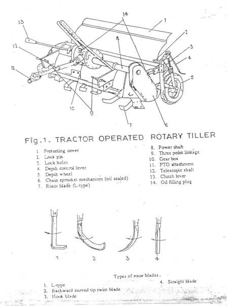

FMP 211 :: Lecture 07 :: SECONDARY TILLAGE EQUIPMENT – HARROWS, LAND FORMING EQUIPMENT – ROTAVATORS – WET LAND EQUIPMENT – PUDDLERS AND MANURE TRAMPLERS – CAGE WHEELS

SECONDARY TILLAGE
Tillage operations performed after primary tillage to create proper soil tilth for seeding and planting are called secondary tillage. These operations are lighter and finer operations performed on the soil after primary tillage operations. Secondary tillage operations do not cause much soil inversion and shifting of soil from one place to another place. These operations consume less power per unit area compared to primary tillage operations. The implements used for secondary tillage operations are called secondary tillage implements they include different types of harrows, rollers and pulverizers, rotary tillers, tools for mulching and fallowing, cage wheels etc..
The objectives of secondary tillage
- To improve the seed bed by greater pulverization of the soil
- To destroy grasses and weed seeds in the field.
- To cut crop residues and mix them with top soil
- To break the big clods and to make the field surface uniform and leveled.
HARROWS
Harrow is a secondary tillage implement used for a variety of jobs in crop cultivation. They are listed as follows
- Used before ploughing to cut vegetable matter such as corn stock, cotton stalk, and weeds and mix with soil for soil conservation
- Used to pulverize the top soil so that the furrow slices will make better connection with the bottom of the sole preventing air space when slices are turned
- Used after ploughing to pulverize the soil and put it in better tilth for the reception of the seed
- Used for the cultivation of crops
- Used for summer fallowing
- Used to cover the seeds after sowing
There are many kinds of harrows namely, the disc harrow, spike tooth harrow, spring tooth harrow, rotary cross- harrow, soil surgeon, triangular harrow, acme harrow, blade harrow , reciprocating power harrow etc.
DISC HARROW
It is a harrow, which performs the harrowing operation by means of a set of rotating discs, each set being mounted on a common shaft. Disc harrow is found very suitable for hard ground with full of stalks and grasses. It cuts the lumps of soil, clods and roots. Discs are mounted on one, two or more axles which may be set at a variable angle to the line of motion. As the harrow is pulled ahead, the discs rotate on the ground. Depending upon the disc arrangements, disc harrows are divided into two classes a) Single action and b) Double action.
1. SINGLE ACTION DISC HARROW
It is a harrow with two gangs placed end to end with an angle greater than 90o. The discs are arranged in opposite directions on both gangs so that the right side gang throws the soil towards right and the left side gang throws the soil towards left.
Types of disc harrow
2. DOUBLE ACTION DISC HARROW (TANDEM DISC HARROW)
The double action disc harrow is often called a tandem harrow because a set of two gangs follows behind the front gangs and is arranged in such a way that the discs on the front gangs throw the soil in one direction ( usually outward) , and the discs on the rear gangs throw the soil in the opposite direction (outward) Thus the entire field is worked twice in each trip
3. OFF-SET DISC HARROW-
Offset disk harrow has one right-hand gang (throwing the soil to the right) and one left – hand gang (throwing the soil to the left), operating in tandem. The harrow is given this name because the harrow can be operated in offset position in relation to the tractor. A change in hitch can cause the harrow to run either to the left or right of the tractor. It is possible to operate the harrow under limbs , near trees in an orchard.
| Offset disc harrow | Fig.4. Disc harrow |
PARTS OF A DISC HARROW
i. Disc: It is a circular concave disc which cuts and inverts the soil. Disc is made of heat-treated hardened steel. Tractor drawn disc harrows have concave discs of size varying from 35-70 cm diameter. Concavity of the disc affects penetration and pulverization of soil. Usually two types of disc are used in disc harrows, plain disc and cut away disc. Plain discs have plain edges and they are used for all normal works. Most of the harrows are fitted with plain discs only. Cut away discs have serrated edges and they cut stalks, grass and other vegetation. They are not effective for pulverization of soil but it is very useful for puddling the field especially for paddy cultivation.
ii. Gang: Each set of discs that are mounted on a common shaft is called the gang.
iii. Gang bolt or arbor bolt: It is a long heavy square headed bolt. Discs are mounted on the gang bolt. The spacing between the discs on the gang bolt ranges from 15 to 25 cm for light duty and 25 to 30 cm for heavy duty harrows.
Iv. Gang angle.- The angle between the axis of the gang bolt and the direction of travel is called the gang angle.
iv. Gang control lever: This lever is used to change the gang angle of the gangs which in turn alters the width of operation.
v. Spool or spacer: The flanged tube, mounted on the gang bolt between every two discs to prevent the lateral movement of the disc on the shaft is called the `spool’ or `spacer’. Spacer keeps the discs at equal spacing on the gang bolt. It is usually cast in special shapes and sizes and is generally made of cast iron.
vi. Bearing: Bearing is essential for frictionless rotation of the gang. They also counter act the end thrust due to soil reaction on the discs. Chilled cast iron bearings are used which are more durable than other types of bearings
vii. Transport wheel: In trailing type disc harrows, transport wheels are provided for transport of the harrow on roads without damage to the edges of the discs . Mounted type harrows do not require wheels for transport work.
viii. Scraper: It removes the soil that may stick to the concave side of the disc while working and thus prevents clogging of the discs.
ix. Weight box: A box like frame is provided on the main frame of the harrow for putting additional weight on the implement to increase the penetration of the disc in the soil.
ADJUSTMENTS FOR OBTAINING HIGHER PENETRATION
There are several factors which affect the penetration of disc harrow in the field. Penetration can be increased by
- increasing the gang angle
- adding weights
- lowering the hitch point
- using sharp edged discs of small diameter and lesser concavity
- regulating the speed.( penetration is better in low speeds than in high speeds)
SPIKE TOOTH HARROW
Spike tooth harrow has teeth resembling long spikes that stir the soil. These harrows are also known as peg tooth harrow, drag harrow, section harrow, or smoothing harrow. Its principal use is to smoothen and level the soil directly after ploughing. It will stir the soil to a depth of about 5 cm, if weighted. It may be used to cultivate corn, cotton and other row crops in early stages of growth. The sections range in width from 1.2 to 1.7m and may have twenty five, thirty, thirty five teeth. Several sections may be attached to a hitch bar and a wide swath harrowed. The sections may be rigid or flexible. Sections that have guard rails across the ends of the bars are called close-end harrows, while those that do not have guard rails are called open-end harrows
ANIMAL DRAWN SPIKE TOOTH HARROW
The animal drawn spike tooth harrow is usually of rigid type. These may or may not have provisions for changing the angle of spikes in operating conditions. This harrow mainly consists of teeth, tooth bar, guard rail, clamps, braces, levers and draft hooks. The teeth are made up of hardened steel with square/triangular/circular in section. The teeth are so placed on tooth bar that no tooth is directly behind the other. Teeth are fastened rigidly to the tooth bar. Clamps are rigidly fixed so as not to be loose while in operation.
Spike tooth harrow - animal drawn
SPRING TOOTH HARROW
Spring tooth harrows are made in sections somewhat like spike tooth harrows. The sections vary in width from 0.9 to 1.7m. The sections may have from seven to twelve teeth. A single section may be used alone or several sections may be hitched together and used as a unit. The number of sections used depends upon the power available.
The teeth consists of wide, flat, curved, oil-tempered bars of spring steel, one end of which is fastened rigidly to a bar; the other end is pointed to give good penetration. The depth to which the teeth will penetrate the soil is controlled by adjusting the angle of the teeth by means of levers. Some spring tooth harrows are provided with a power – angling hitch.
|
|
| Tractor drawn spring tooth harrow | Animal drawn spring tooth harrow |
Spring tooth harrow- animal drawn
ACME HARROW
It is a special type of animal drawn harrow having a transverse horizontal frame with stiff curved blades. Also known as blade harrow; curved knife-tooth harrow; pulverizer. The front part of the knife breaks the soil and crushes the clods . This harrow obtains a good pulverization. It is good for creating soil mulch.
Acme harrow
PATELA
It is a wooden plank used for smoothening the soil and crushing the weeds. It is also used for breaking clods, packing and leveling the ploughed soil and to remove the weeds. It is made of a wooden plank with a number of curved steel hooks bolted to a steel angle section, which is fixed to the rear side of the plank. The cutting edge levels and packs the soil and the curved hooks uproot and collect the weeds. It is a animal drawn version
Patela
TRIANGULAR HARROW
It is a spike tooth harrow with triangular frame. The frame is made of wood and pointed spikes are fitted in the frame. The teeth of the spikes are fixed and not adjustable. It is used for breaking the clods and smoothening the soil surface.
Triangular harrow
BLADE HARROW (BAKHAR OR GUNTAKA)
It is an animal drawn implement used to prepare seedbeds in clayey soils and soil mulch for soil moisture conservation. It consists of one or more blades attached to a beam which works at shallow depth with minimum or nil soil inversion.
| Animal drawn blade harrow | Tractor drawn leveler cum blade harrow | |
POWER HARROW – TRACTOR DRAWN
A power harrow tills the soil maintaining the same profile of the field. It pulverizes the upper and lower layer of soil without turning them up side down and thus it forms a good seed bed as well as good soil mulch. It consists of two horizontal cross bars fitted with rigid pegs which reciprocate taking power from the PTO of a tractor. The pegs are spaced 200 mm wide and are staggered with respect to each cross bar. The two bars move in opposite directions and hence the implement is dynamically balanced. The oscillating pegs break the clods and pulverizes the soil to a fine tilth. The width of the operation is 2000 mm. and the field capacity is around 1.5 ha/day.
| Power harrow – tractor drawn | Power harrow – Power tiller drawn | |
ROTARY TILLER
The rotary tiller or rotary cultivator is widely considered as the most important implement as it provides fine degree of soil pulverization. It is directly mounted to the tractor and operated. The rotor is The benefits of the rotary tiller are a) effective pulverization of soil ensures good plant growth b) cutting and mixing of stubbles and roots and mixing with soil and c) leveling of the field
The functional components include, rotor fitted with L shaped steel blades (36 – 48 Nos.), gear box, power shaft, sprocket - chain drive, universal joint, leveling board, shield, depth control arrangement, and three point hitching provision. The power from the tractor engine is transmitted to the rotary tiller( rotavator) through PTO (Power Take Off) of the tractor. A leveling board is attached to the rear side of the unit for leveling the tilled soil. Two numbers of adjustable brackets are provided one each on either side of the unit for controlling the depth of operation. The rotor is operated at 180- 200 rpm
Types of blades used in rotary tillers.
i. 'L' type blade - Works well in trashy conditions. More effective in cutting weeds and but do not pulverize the soil much.
ii. Twisted blade - Suitable for deep tillage in relatively clean grounds, but clogging and wrapping of trashes on the tynes and shafts needs frequent cleaning.
iii. Straight blade - Employed on mulchers designed mainly for secondary tillage.

Rotary tiller
LAND ROLLERS OR PULVERISERS
Land rollers or pulverisers are tools used for further preparation of seed bed.
1. CLOD CRUSHER: It is used to finish preparing the seed bed by thoroughly pulverizing and firming the loose soil so that there will not be any large air space or pockets. It presses the upper soil down against the sub soil, making a continuous seedbed in which moisture is conserved and given to the roots of the plants as it is needed.
Single gang land roller (Clod crusher)
2. V- SHAPED ROLLER PULVERIZER: It is constructed of a number of wheel sections arranged on a shaft. The surface of the roller forms a kind of corrugation. so it is also called as corrugated roller. It rolls, pulverizes, packs, levels, cultivates, and mulches the soil.
LEVELERS
Land leveling is a permanent improvement done on agricultural lands. It is carried out to smoothen the contours of land to achieve certain desirable objectives for efficient agricultural production. Land leveling helps for (i) efficient application of irrigation water, (ii) improved surface drainage, (iii) minimizing soil erosion (iv) conservation of rain water in dry lands and The animal drawn leveler consists of a wooden leveling board with a handle . In the front portion of the board two hooks are provided for connecting it to the yoke of the animals.
1. SOIL SCOOP
Soil scoops are used for excavating ditches , clearing drains and doing cut and fill jobs in land leveling . It consists of a trough, a blade , hitching loop and handle. Soil scoops are available Both animal drawn and tractors drawn versions are available
i. Blade: Blade is made of light carbon steel with carbon content varying from 0.5 – 0.6%. The angle of the cutting blade varies from 12° to 15° angle The blade is riveted or bolted to the soil trough.
ii. Soil trough: It is made of mild steel sheet and shaped in to a trough.
iii. Hitching loop: The loop is made of mild steel. The ends of the loop are fitted to the side of the soil trough.. The hitching loop is provided with iron rings or pins for connecting the soil scoop to animals or a tractor
iv. Handle: In animal drawn version there are two handles made of timber or mild steel plate fitted to the loop and used to control the movement of the implement.
| Soil scoop – animal drawn | Soil scoop – tractor drawn |
2. TRACTOR DRAWN LEVELER
It is a tractor-mounted implement controlled by tractor hydraulics and three-point linkage. It consists of hitch system, replaceable cutting blade with sharp edge, and a curved plate with side wings, which form a bucket.. During operation, the blade digs into the soil and extra soil is collected in the bucket, which is released in the depressions of the field. The angle and pitch of leveler is adjustable. The leveler can also be angled left or right, or reversed for back filling.

Tractor drawn leveler
3. LEVELING BOARD- BULLOCK DRAWN
It is a wooden board of length 2.0m, width 0.4m and thickness 0.3m provided with side wings, hitching braces and handle. The board is hitched to animals and pulled. The blade scrapes soil from elevated places, the soil is moved to places where there are depressions and released. It can be used in leveling of paddy field after puddling
SECONDARY TILLAGE IMPLEMENTS FOR RICE CULTIVATION
1. CAGE WHEELS
This is an iron wheel, lugged with L angles. The tractor will not work satisfactorily in ploughing / puddling of rice fields due to slippage of rubber wheels. To overcome this difficulty iron wheels are introduced which are called cage wheels.. Cage wheels are of two types viz., half cage wheel and full cage wheel. The iron lugs provide required grip and facilitate easy movement of tractor in rice field. Half cage wheels are fitted to the rubber tyre wheels and used. . For full cage wheels, tyre wheels are removed and used The width of full cage wheel is 1 m and that of the half cage wheel is 0.5 m.
2. PUDDLER
Puddler is used for churning the soil with standing water while preparing fields for paddy transplanting. It is used after completing an initial ploughing with iron plough or country plough. It breaks up the clods and churns the soil. The main purpose of puddling is to reduce percolation and leaching losses of water, to kill weeds by decomposition and to facilitate transplantation of paddy seedlings by making the soil softer. Puddling is done in standing water of 5-10 cm depth. Different types of puddlers namely straight blade , helical blade, paddle type, and cage wheel type puddlers are available
Animal drawn puddler consists of four to six number of 0.6m long blades, radial arms to hold the blades, axle, bush bearing, frame, hitching braces, handle etc. While pulling, the blades rotate and puddle the soil. . The weight of the puddler is 30-40 kg.
i. Frame: The frame consists of front, rear and side pieces made of steel or wood.
ii. Puddling unit: Puddling unit consists of blades made of mild steel. The blades are rigidly fixed radial arms
iii..Radial arms: This holds the blades in position. This is made up of mild steel plate.
iv. Axle: The axle is made up of mild steel bar of 25 mm in diameter.
v. Beam: The beam is made up of wood and is suitably placed in the frame with the help of bracer and the other end to the yoke to hitch the animal.
| Download this lecture as PDF here |